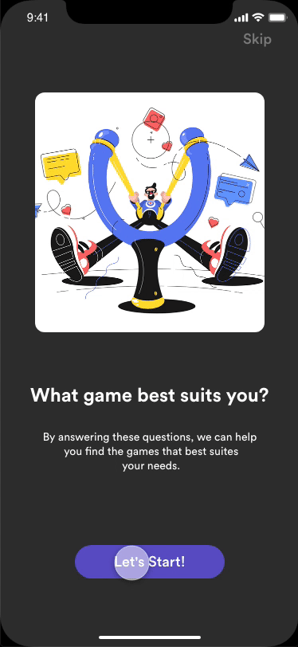

How might we bring in new games?
"As the coronavirus crisis persists and global citizens are self-isolating indoors, many are spending their time gaming. In fact, Verizon reported an increase of gaming traffic up 75% since March 2020, and data from Streamlabs indi-cates a 20% surge in usage hours across streaming platforms. And due to the loneliness of quarantine, folks of all ages are getting into gaming to stay connected and occupied."
New gamers are overwhelmed with choices, and there is no single resource to help them discover games that are right for them and their current situation.
Activision would like to see how an interactive experience might get new gamers acquainted and integrated into the gaming community.
As a group of passionate designers, we would love to explore new ways to connect people via games.
Final Prototype
It was challenging to conceptualize and design within two days. We are very proud that we managed to submit it within the tight deadline!
Please check the prototype/all screens here: Horizon App
Feature Highlights
"I am not sure if I should try this game..."
During user interviews, it turned out that people were having trouble to find their first game. Instead of browsing top game lists online, most of them bought a game as they played it once at their roommate's place, saw it from a friend's Switch, or got recommendation from several friends.
As to solve this problem, we curated a list of questions that helped define new gamers and recommended the game that fits their interest most.

"How can I connect with people during quarantine?"
Other than finding a game to start with, people were longing for social connection more than before due to self-quarantine. How might we connect people virtually?
We took the approach to group people by different types of gamers. We will recommend games via people's friends and gamer types.

"I want to know more about this game!"
From user interviews we realized that new gamers relied on friends' game suggestions a lot. How might we bring the same experience to our Horizon App?
We allow friends and same type of gamers to share their comments with the gaming community. As to help people review the game better, we also included reviews from game professionals.